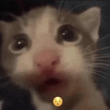
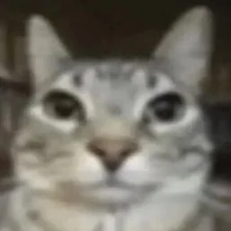

Un chat fatigué
Le petit chat blanc, épuisé par une longue journée de jeu, cherche un endroit confortable pour se reposer. Ses yeux mi-clos trahissent sa fatigue, tandis qu'il s'étire paresseusement avant de s'allonger sur le canapé moelleux.

Le petit chat blanc, épuisé par une longue journée de jeu, cherche un endroit confortable pour se reposer. Ses yeux mi-clos trahissent sa fatigue, tandis qu'il s'étire paresseusement avant de s'allonger sur le canapé moelleux.
Un chat, habituellement stoïque, a été vu écarquillant les yeux de surprise ce matin. La cause de son étonnement ? Un simple concombre placé derrière lui.
Un chat observe attentivement le photographe. Ses yeux perçants suivent chaque mouvement de l'homme.
